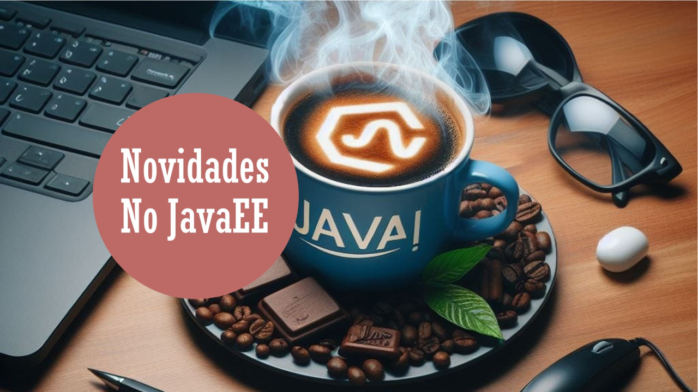
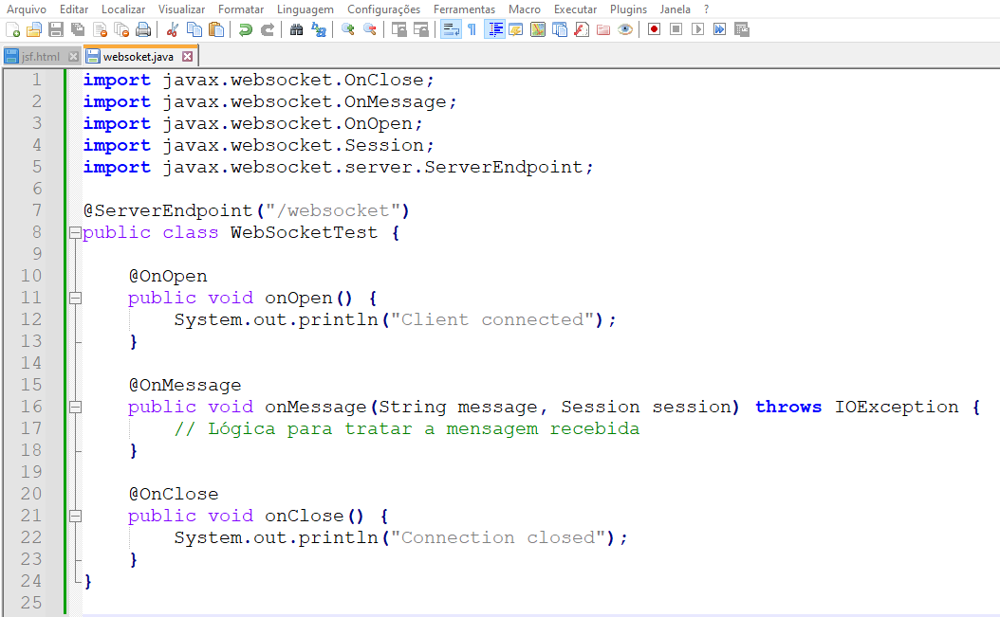
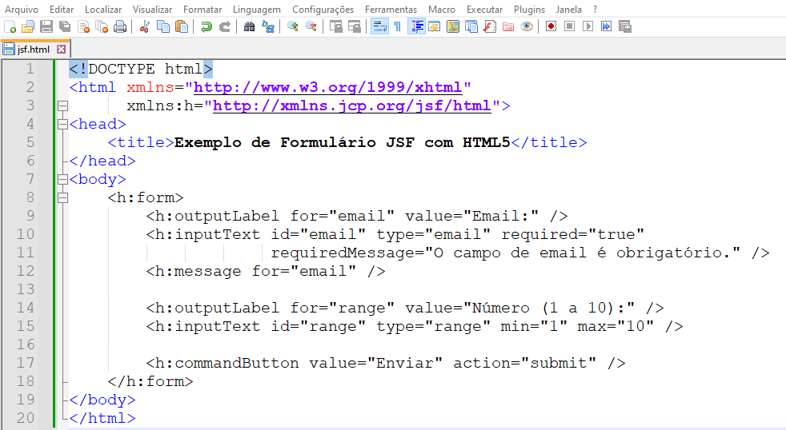

Novidades do Java Enterprise Edition (Atualmente chamado de Jakarta EE)
Algumas novidades do JavaEE

Desenvolvedor Java Sênior na Develcode
14 de abril de 2024
A tecnologia JavaEE oferece suporte robusto para HTML5 e WebSockets, o que é uma grande vantagem para desenvolvedores que desejam construir aplicações web modernas e interativas. Vou explicar um pouco mais sobre cada um:
HTML5 em JavaEE:
O HTML5 trouxe uma série de melhorias para a marcação de páginas web, permitindo mais interatividade e compatibilidade com dispositivos móveis. Em JavaEE, o suporte ao HTML5 permite que os desenvolvedores utilizem novos tipos de formulários, elementos de áudio e vídeo, canvas para desenho, além de outras APIs para aplicações web ricas.
WebSockets em JavaEE:
WebSockets é uma tecnologia que permite comunicações bidirecionais e em tempo real entre clientes e servidores. Em Java EE, isso é implementado através da API de WebSocket, que faz parte da especificação desde o JavaEE 7. Com WebSockets, é possível estabelecer uma conexão persistente e de baixa latência que é ideal para aplicações que necessitam de atualizações em tempo real, como jogos online, chat, aplicações financeiras, entre outros.
Aqui está um exemplo simplificado de como um servidor WebSocket pode ser implementado em Java EE:

Exemplo de implementação do WebSocket para o JavaEE.
Neste código, @ServerEndpoint define a classe como um endpoint de WebSocket que escuta na rota "/websocket". Os métodos anotados com @OnOpen, @OnMessage e @OnClose são chamados respectivamente quando uma nova conexão é estabelecida, uma mensagem é recebida e uma conexão é fechada.
Essas funcionalidades permitem que os desenvolvedores criem aplicações web mais dinâmicas e responsivas, aproveitando as vantagens do protocolo WebSocket e as novas características do HTML5.
Um exemplo de como o Java EE pode ser utilizado com HTML5 é através da criação de uma aplicação web que utiliza JSF (JavaServer Faces) para construir interfaces de usuário ricas e interativas. JSF é um framework MVC que simplifica a construção de interfaces de usuário para aplicações Java EE na web.
Aqui está um exemplo simplificado de um formulário web utilizando JSF com elementos HTML5:

Um exemplo de código JSF para atender páginas HTML5
Neste exemplo, utilizamos o elemento h:inputText com o atributo type definido como email, que é um tipo de entrada específico do HTML5 para endereços de e-mail. Isso permite que o navegador valide automaticamente o formato do e-mail antes de enviar o formulário. Além disso, o atributo type range cria um controle deslizante para selecionar um número dentro de um intervalo especificado.
Este é apenas um exemplo básico, mas o Java EE com HTML5 permite a criação de interfaces de usuário muito mais complexas e interativas, aproveitando as diversas funcionalidades que o HTML5 oferece.
Curiosamente, houve uma mudança do Java EE para Jakarta EE onde representa uma transição para a plataforma de desenvolvimento empresarial Java. Aqui estão alguns postos-chaves sobre essa mudança:
- Transferência para a Eclipse Foundation: Em 2017, a Oracle transferiu a responsabilidade do desenvolvimento e evolução do Java EE para a Eclipse Foundation.
- Renomeação: Com a transferência, o Java EE foi renomeado para Jakarta EE para refletir a nova governança e direção da plataforma.
- Objetivos da Transição: A mudança visa promover uma maior evolução da plataforma através de um modelo de governança aberto e colaborativo, envolvendo a comunidade e outras partes interessadas no processo de desenvolvimento.
- Impacto no Desenvolvimento: A transição para Jakarta EE é vista como um passo positivo para o futuro do desenvolvimento Java na web, com a expectativa de que a plataforma continue a crescer e a se adaptar às necessidades modernas de desenvolvimento de aplicações empresariais.
A Eclipse Foundation é conhecida por seu trabalho com a IDE Eclipse e tem uma longa história de apoio ao desenvolvimento de software aberto. A transição para Jakarta EE abre novas oportunidades para inovação e colaboração na comunidade Java.
O Jakarta EE passou então a ser uma plataforma de desenvolvimento de software para aplicações empresariais. Ela fornece um conjunto de especificações e extensões para a linguagem Java padrão (Java SE), que facilitam a criação de aplicações robustas, escaláveis e seguras. Assim, Jakarta EE é o novo nome da plataforma sob a governança da Eclipse Foundation, após a transferência dos direitos do Java EE pela Oracle.
Para as técnicos e desenvolvedores que desejam dominar o Jakarta EE são vastas os materiais e cursos existentes. Vamos enumerar algumas opções:
1. Guias de Início Rápido: A Eclipse Foundation oferece guias de início rápido para ajudar a começar com projetos simples de micro-serviços Jakarta EE.
2. Cursos Online: Existem vários cursos online que cobrem os fundamentos do Jakarta EE e como construir serviços web RESTful com a plataforma.
3. Workshops e Treinamentos: Workshops práticos e cursos de treinamento são oferecidos por várias organizações, incluindo a própria Eclipse Foundation, para ensinar as especificações e implementações do Jakarta EE.
4. Documentação e Tutoriais: A documentação oficial e tutoriais detalhados estão disponíveis para auto-estudo e referência.
5. Comunidade e Fóruns: Participar da comunidade Jakarta EE e fóruns de discussão pode ser uma ótima maneira de aprender com outros desenvolvedores e acompanhar as últimas novidades.
Esses recursos são projetados para atender a diferentes estilos de aprendizado e níveis de experiência, facilitando o domínio do Jakarta EE para desenvolvimento de aplicações empresariais modernas e escaláveis. Fica aqui a dica.